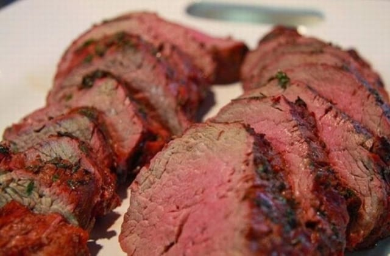
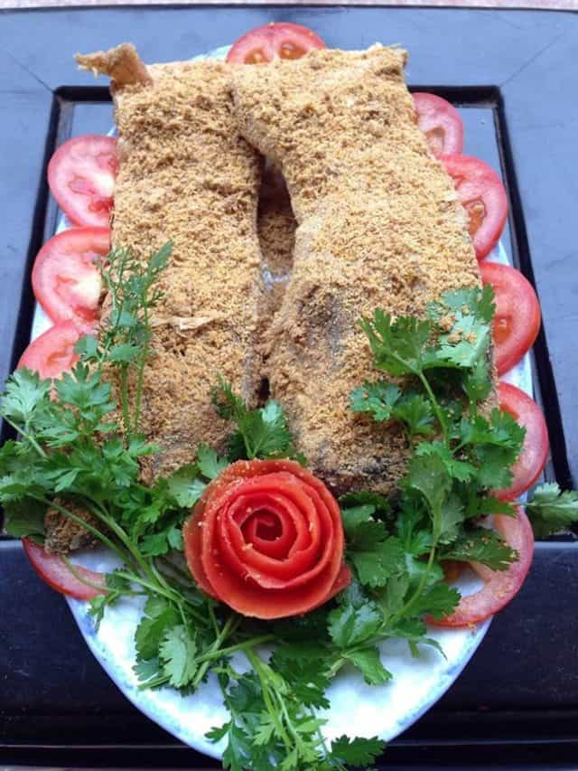
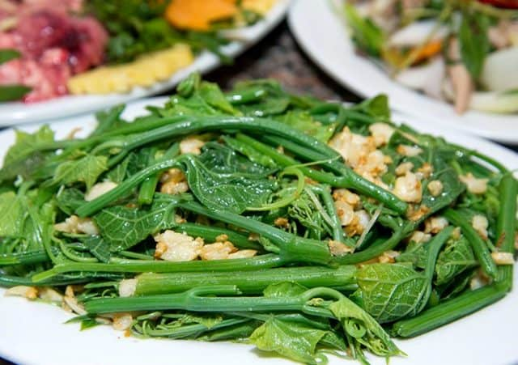
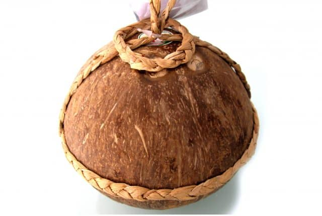

1. Bánh ngõa Lũng Ngoại
Bánh ngõa là loại bán đặc sản nổi tiếng của làng Lũng Ngoại, xã Lũng Hòa, huyện Vĩnh Tường, Vĩnh Phúc.
Loại bánh đặc biệt này được làm từ gạo nếp, đỗ xanh, mật mía hoặc đường.
Hương vị bùi bùi, ngọt ngọt, càng nhai càng thấy béo ngậy của bánh ngõa chắc chắn sẽ làm du khách nhớ mãi không quên.

2.Bò tái kiến đốt
Bò tái kiến đốt là một món ăn đặc sản rất đặc biệt của Vĩnh Phúc. Người ta lấy những miếng thịt bò từ 1-2kg đặt vào những ổ kiến to trên các cây lớn, chọc cho lũ kiến ra khỏi tổ bâu vào đốt lấy miếng thịt. Những miếng thịt này sẽ được rửa sạch lại bằng nước muối pha loãng, để ráo rồi đem nướng chín trên bếp than hồng rực. Khi ăn hương vị của mỗi miếng thịt lại khác nhau bởi mỗi loại kiến lại cho ra những mùi vị đặc trưng riêng: kiến vống đỏ có mùi thơm chua, kiến vống đen có mùi thơm hắc, kiến bồ nọt có vị cay ngọt,… Đây không chỉ là món ăn đặc sản mà nó còn có giá trị trong việc phòng và chữa bệnh thần kinh và thấp khớp.
3. Cá thính Lập Thạch
Món cá thính đặc sản Lập Thạch nổi tiếng do người dân Văn Quán sáng tạo ra. Nguyên liệu làm nên món ăn này bao gồm cá tươi, ngô, đậu rang, muối, lá ổi. Loại cá làm ngon nhất là cá quả, cá mè, cá trôi
4.Su su Tam Đảo
Tam Đảo là vùng trồng nhiều su su nhất của Vĩnh Phúc. Su su Tam Đảo có thể chế biến thành nhiều món ăn khác nhau như ngọn su su xào, ngọn su su luộc, quả su su xào,… Bất cứ du khách nào đến Tam Đảo nghỉ dưỡng nhất định đều sẽ thưởng thức bằng được món đặc sản này và mua ngọn su su về làm quà cho bạn bè và người thân.
5. Rượu dừa Tiên Tửu Ngọc Hoa
Rượu dừa Tiên Tửu Ngọc Hoa là loại rượu nổi tiếng của vùng quê Yên Lạc. Loại rượu này mang đặc trưng rất riêng mà không loại rượu nào có được. Nó có mùi thơm mát của trái dừa, vị ngọt dịu khiến người uống cảm thấy lạ miệng.
